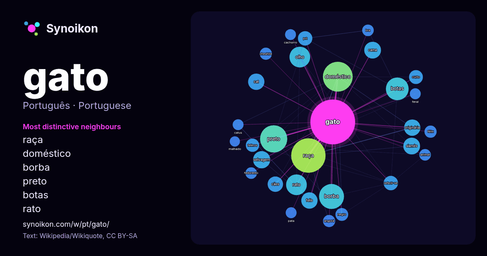

Português · palavra popular
gato
“cat” · As palavras encontradas ao seu redor em 989 ocorrências da Wikipédia, Wikiquote.

Vizinhos mais característicos
- raça 63×
- doméstico 55×
- borba 42×
- preto 39×
- botas 35×
- rato 28×
- olho 23×
- siamês 20×
- selvagem 20×
- cama 19×
- felis 19×
- cat 18×
- originária 18×
- cães 16×
- prt 15×
- referir-se 14×
- felinos 13×
- curto 12×
- angorá 11×
- cheshire 11×
× = quantas vezes mais do que no texto geral da Wikipédia.
Vizinhos mais frequentes
- raça 80
- doméstico 60
- preto 50
- borba 42
- botas 35
- olho 29
- rato 29
- selvagem 20
- cama 19
- siamês 19
- cat 18
- felis 18
- originária 18
- cães 16
- brasil 15
- chamado 15
- filme 14
- prt 14
- referir-se 14
- série 14
Em contexto
- Nota: Para outros significados, veja Gato (desambiguação). Gato (nome científico: Felis catus) ou gato doméstico é um mamífero carnívoro da família dos Wikipedia snippets · Gato
- Leopardus tilcayo ou gato-tilcayo é uma espécie de gato selvagem identificada na Bolívia, na região dos Iungas. Descrita em 2026, foi a primeira nova espécie Wikipedia snippets · Leopardus tilcayo
- Sphynx, gato pelado canadense ou gato-esfinge (também comummente, mas erroneamente, chamado de gato-egípcio), é uma raça de gatos originária do Canadá Wikipedia snippets · Sphynx
- O Gato de Schrödinger é uma experiência mental, frequentemente descrita como um paradoxo, desenvolvida pelo físico austríaco Erwin Schrödinger, em 1935 Wikipedia snippets · Gato de Schrödinger
- Gato siamês é uma raça de gato oriental, caracterizada por um corpo elegante e esguio e uma cabeça marcadamente triangular. Pode ser confundido com a raça Wikipedia snippets · Siamês (gato)
- Nota: Para outros significados, veja Borba Gato (desambiguação). Manuel de Borba Gato (São Paulo dos Campos de Piratininga, 1649 – Nossa Senhora da Conceição Wikipedia snippets · Borba Gato
- Um gato malhado, gato tigrado ou ainda tabby é qualquer gato doméstico (Felis catus) com um padrão de pele caracterizado por uma marca em formado de M Wikipedia snippets · Gato malhado
- O Gato de Cheshire, Gato Risonho, Gato Listrado ou Gato Que Ri é um gato fictício famoso através do livro Alice no País das Maravilhas de Lewis Carroll Wikipedia snippets · Gato de Cheshire
Mais palavras
- arte
- ciência
- clima
- comida
- coração
- cão
- deus
- dinheiro
- família
- força
- história
- língua
- morte
- natureza
- ouro
- ponte
- saúde
- trabalho
- trem
- verdade
- vida
- água
Pré-calculado em 2026-10-09 com as configurações padrão (±5 palavras, corpus médio). O mapa interativo pode atualizá-lo com dados ao vivo.
Interface traduzida automaticamente; correções são bem-vindas.